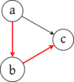
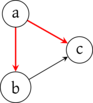

Graphes

1 Graphes orientés
1.1 Définition
On représente graphiquement un graphe sous la forme d’un diagramme sagittaire où les sommets sont des points et où une arêtes \((a,b)\) est une flèche allant du point \(a\) au point \(b\).
1.2 Voisins et degrés
\[ A = \bigcup_{x \in S} \enscomp{(x,y)}{y \in S, (x,y) \in A} = \bigcup_{x \in S} \enscomp{(x,y)}{y \in v_+(x)} \]
Et en prenant la cardinal de cette égalité, on obtient directement \(|A| = \sum_{x \in S} d_+(x)\). L’autre égalité est symétrique en considérant les arêtes de même but.
1.3 Chemin
Soient \(x, y \in S\) et \(\varphi = (s_0, \dots, s_p) : x \leadsto y\).
Comme \(s_{i-1} \rightarrow s_i\) on a \(s_{i-1} R s_i\) et, par transitivité, \(x = s_0 R s_p = y\). Donc \(x \leadsto y \Rightarrow x R y\).
Ainsi \(\leadsto \subset R\).
On dit que \(\leadsto\) est la clôture réflexive et transitive de \(\rightarrow\).
1.4 Sous-graphe
1.5 Implémentation
1.5.1 Énumération de sommets
Si on considère un graphe \(G = (S,A)\), il est assez naturel de représenter ses sommets dans un tableau. Pour cela, on fixe naturellement un ordre sur ces sommets et on va associer à chaque sommet son indice dans le tableau.
Par exemple, si \(S = \{ a, b, c, d\}\) on va pouvoir considérer [ a, b, c, d ] et ainsi associer à a son indice 0 dans le tableau. L’ordre est arbitraire, on aurait pu considérer [ b, c, a, d ] et l’indice de a aurait alors été 2.
Ce qui compte, c’est de pouvoir travailler directement sur les indices et pas sur les éléments. Une manière de s’en convaincre est d’imaginer le graphe d’un réseau social où un sommet correspond au profil d’une personne, et contient donc beaucoup (trop) d’informations. Il est bien plus raisonnable de lui associer un identifiant unique et d’utiliser cet identifiant ensuite.
Quand on va implémenter des graphes, on peut donc supposer que les sommets sont les entiers de 0 à n-1 où \(|S| = n\). Il sera toujours possible de retrouver la correspondance avec les sommets eux-mêmes.
1.5.2 Matrice d’adjacence
On en déduit ainsi une implémentation directe d’un graphe en représentant la matrice d’adjacence comme l’a fait pour des images.
m = [ [ 0, 1, 1, 1 ],
[ 1, 0, 0, 1 ],
[ 0, 0, 0, 1 ],
[ 1, 1, 0, 0 ] ]let m = [| [| 0; 1; 1; 1 |];
[| 1; 0; 0; 1 |];
[| 0; 0; 0; 1 |];
[| 1; 1; 0; 0 |] |]Cette représentation permet d’accéder, en lecture comme en écriture, à une arête en temps constant. Cependant, pour récupérer les voisins d’un sommet, il est nécessaire de parcourir toute la ligne correspondante, donc en \(O(|S|)\).
1.5.3 Listes d’adjacences
La donnée de \(v_+(x)\) pour chaque sommet \(x \in S\) suffit à reconstruire \(A\).
On en déduit ainsi une représentation d’un graphe où on place dans un tableau chaque \(v_+(x)\) représenté par une liste chaînée ou un tableau dynamique.
L’accès en lecture ou en écriture à une arête est alors en \(O(|A|)\) mais on peut parcourir les voisins sortant en \(O(|A|)\) également. Pour un sommet donné, on peut même préciser \(O(d_+(x))\). Accéder à la liste peut même se faire en \(O(1)\).
Pour obtenir les voisins entrants, il est par contre nécessaire de tester la présence de \(x\) dans chacune des autres listes, on obtient donc un algorithme en \(O(|S| + |A|)\) : on parcourt chaque case du tableau des listes puis chaque maillon de listes d’adjacence.
Il est possible d’améliorer cela en utilisant un structure plus efficace pour stocker les ensembles. Cela peut-être un dictionnaire reposant sur une table de hachage. L’avantage de cela est que pour tester l’appartenance \(y \in v_+(x)\) on sera en \(O(1)\) avec un dictionnaire alors qu’on sera en \(O(d_+(x))\) avec une liste.
1.5.4 Comparaison
| opération | Matrice | Listes | Dictionnaire |
|---|---|---|---|
| complexité spatiale | \(O(|S|^2)\) | \(O(|S|+|A|)\) | \(O(|S|+|A|)\) |
| arête test | \(O(1)\) | \(O(|A|)\) | \(O(1)\) |
| arête ajout | \(O(1)\) | \(O(1)\) | \(O(1)\) |
| arête suppression | \(O(1)\) | \(O(|A|)\) | \(O(1)\) |
| sommet ajout | \(O(|S|^2)\) | \(O(|S|)\) | \(O(|S|)\) |
| sommet suppression | \(O(|S|^2)\) | \(O(|S|)\) | \(O(|S|)\) |
| voisins/degré + | \(O(|S|)\) | \(O(1)\) | \(O(1)\) |
| voisins/degré - | \(O(|S|)\) | \(O(|S|+|A|)\) | \(O(|S|)\) |
Notons qu’il est possible d’améliorer certaines complexités en utilisant des tableaux dynamiques, notamment les ajouts et suppressions de sommets.
2 Graphes non orientés
2.1 Définition et adaptation du vocabulaire
On reprend directement l’essentiel du vocabulaire des graphes orientés symétriques avec des simplifications :
On étend directement la notion de chemin mais il faut faire attention au fait que simple n’a pas le même sens entre un graphe non orienté symétrique et un graphe non orienté. En effet, on \(x \rightarrow y \rightarrow x\) est simple pour un graphe orienté alors que \(x \smile y \smile x\) ne l’est pas vu qu’il s’agit de la même arête.
2.2 Connexité
2.3 Graphe acyclique connexe
2.4 Graphe biparti
Ici, le graphe est biparti avec \(S_1 = \{a,e,f,g\}\) et \(S_2 = \{b,c,d\}\).
On peut s’en rendre compte en colorant les sommets.
En fait, être biparti est équivalent à pouvoir être coloré en deux couleurs en sorte que deux sommets reliés soient de couleur différente.
3 Graphes classiques
On présente ici brièvement des graphes ou des familles de graphes classiques qui serviront, notamment pour les exemples.
3.1 Graphes complets
\(K_5\) :
\(K_8\) :
\(K_{3,4}\) :
3.2 Cycles
\(C_5\) :
\(C_8\) :
\(C^o_5\) :
\(C^o_8\) :
3.3 Grilles et hypercubes
On va manipuler ici des vecteurs de dimension \(d\) à coordonnées entières dans \(\range{0}{n-1}\).
On sait que \(\range{0}{n-1}^d\) est en bijection avec \(\range{0}{n^d-1}\) et on considère la bijection explicite suivante : \[ \varphi(x) = \sum_{i=0}^{d-1} x_i \text{ où } x = (x_0, \dots, x_{d-1}) \]
Soit \(x = (x_0, \dots, x_{d-1})\) et \(y = (y_0, \dots, y_{d-1}) \in \range{0}{n-1}^d\), on note \(d_1(x,y) = \sum_{i=0}^{d-1} |x_i-y_i|\) qui compte la somme des différences de coordonnées. Ainsi \(d_1( (1,2,3), (3,2,2) ) = |1-3| + |2-2| + |3-2| = 3\). Comme les coordonnées sont entières, on a le théorème suivant qui indique que les vecteurs à distance 1 sont ceux qui différent exactement de 1 dans une unique coordonnée :
On en déduit un graphe de grille des vecteurs à distance 1 :
\(G_3^2\) :
\(G_2^3\) :
On vient de voir l’hypercube de dimension 3 dans l’exemple précédent.
4 Parcours
4.1 Principe
La grande majorité des algorithmes sur les graphes consistent à parcourir les sommets de voisins en voisins pour effectuer des traitements. La manière dont on les parcourt pouvant changer selon les différentes applications.
Citons, par exemple, le fait de déterminer les composantes connexes d’un graphe ou de trouver le plus court chemin entre deux sommets.
On va se placer dans le cadre d’un graphe orienté représenté par listes d’adjacence et en supposant que les sommets sont identifiés par leur indice. Dans ce cadre, si on a, en fait, un graphe non orienté, il sera représenté par son graphe orienté symétrique comme on l’a vu plus haut.
On va également considérer qu’on veut effectuer un traitement, ou une visite, pour ces sommets ou les arêtes empruntées.
4.2 Parcours en profondeur récursif
On présente ici une première manière élémentaire de les parcourir en tirant partie de la récursivité :
- on considère une fonction
parcourset l’appel àparcourspour le sommetxva effectuer des appels récursifs àparcourspour chaque sommet \(y\) de \(v_+(x)\).
Le problème est qu’on ne veut pas traiter deux fois un sommet et on veut que les appels terminent. Pour cela, on introduit une notion d’état associé à chaque sommet. Un sommet peut-être
- Inconnu, cela correspond au fait qu’il n’est pas encore apparu en tant que voisin.
- Découvert, il est apparu mais n’a pas encore été traité complètement.
- Traité (ou Visité), il a non seulement été traité, mais également tous les sommets parcouru grâce à lui.
Pour maintenir cet état dans le code, le plus simple est de considérer un tableau d’entiers etat où etat[i] donne l’état du sommet i.
4.2.1 Première version
On adapte directement le principe précédent en un programme.
INCONNU = 0
DECOUVERT = 1
TRAITE = 2
def parcours(ladj, x, etat):
if etat[x] != TRAITE:
print(x)
for y in ladj[x]:
if etat[y] == INCONNU:
etat[y] = DECOUVERT
parcours(ladj, y, etat)
etat[x] = TRAITE
def lance_parcours(ladj, x):
# État initial inconnu pour tous
etat = [ INCONNU ] * len(ladj)
etat[x] = DECOUVERT
parcours(ladj, x, etat)Ici, on se contente d’afficher les sommets rencontrés.

4.2.2 Arbre de parcours
On peut noter les arêtes empruntées lors du parcours précédents pour découvrir un nouveau sommet, et donc relancer un appel récursif. On obtient alors une structure arborescente qui est appelé l’arbre du parcours en profondeur.
Pour obtenir cet arbre, on va construire un tableau parent pendant le parcours. Lorsqu’on emprunte une arête \(x \rightarrow y\) pour découvrir \(y\), on note \(parent[y] = x\). Par défaut, \(parent[y]\) est indéfini (None ou une valeur d’indice invalide comme \(-1\)).
Comme \(parent[y]\) est défini pour tous les sommets découverts et que les sommets découverts finissent tous par être traités, on peut en déduire directement le théorème suivant :
On présente le calcul de ces chemins dans le programme suivant :
INCONNU = 0
DECOUVERT = 1
TRAITE = 2
def parcours(ladj, x, etat, parent):
if etat[x] != TRAITE:
print(x)
for y in ladj[x]:
if etat[y] == INCONNU:
parent[y] = x
etat[y] = DECOUVERT
parcours(ladj, y, etat, parent)
etat[x] = TRAITE
def arbre_parcours(ladj, x):
etat = [ INCONNU ] * len(ladj)
parent = [ None ] * len(ladj)
etat[x] = DECOUVERT
parcours(ladj, x, etat, parent)
return parent
def chemin(parent, y):
# Renvoie le chemin x -> ... -> y
# en sens inverse
p = [ y ]
while parent[y] != None:
y = parent[y]
p.append(y)
return p4.2.3 Composantes connexes
On peut déduire directement du théorème précédent, le corollaire suivant dans le cas non orienté :
On en déduit alors un algorithme pour obtenir les composantes connexes d’un graphe non orienté :
On va en déduire le programme suivant :
INCONNU = 0
DECOUVERT = 1
TRAITE = 2
def parcours(ladj, x, etat, composante):
if etat[x] != TRAITE:
composante.append(x)
for y in ladj[x]:
if etat[y] == INCONNU:
etat[y] = DECOUVERT
parcours(ladj, y, etat, composante)
etat[x] = TRAITE
def composantes_connexes(ladj):
composantes = []
etat = [ INCONNU ] * len(ladj)
for i in range(len(ladj)):
if etat[i] == INCONNU:
composante = [ ]
parcours(ladj, x, etat, composante)
composantes.append( composante )
return composantes4.2.4 Détection de cycles
Si on est en train de traiter le sommet \(x\) et qu’on rencontre une arête \(x \rightarrow y\) où \(y\) est découvert mais non traité, c’est qu’on est dans l’appel récursif de \(y\) et donc que \(x\) est un de ses descendants : \(y \leadsto x\) en rajoutant la nouvelle arête \(y \leadsto x \rightarrow x\) on en déduit un cycle dans le cas d’un graphe orienté.
Pour un graphe non orienté représenté par un graphe orienté symétrique, il faut faire attention à ne pas prendre un aller-retour \(x \rightarrow y \rightarrow x\) pour un cyle. On demande donc à avoir la condition :
On en déduit le programme suivant :
INCONNU = 0
DECOUVERT = 1
TRAITE = 2
def parcours(ladj, x, etat, parent, est_oriente):
if etat[x] != TRAITE:
for y in ladj[x]:
if etat[y] == INCONNU:
parent[y] = x
etat[y] = DECOUVERT
cycle = parcours(ladj, y, etat, parent, est_oriente)
if cycle != None:
return cycle
elif etat[y] == TRAITE and (est_oriente or parent[x] != y):
return chemin(parent, y)
etat[x] = TRAITE
return None
def detecte_cycle(ladj, x, est_oriente):
etat = [ INCONNU ] * len(ladj)
parent = [ None ] * len(ladj)
etat[x] = DECOUVERT
cycle = parcours(ladj, x, etat, parent, est_oriente)
if cycle != None:
print('Cyclique : ', cycle)
else:
print('Acyclique')4.2.5 Classification des arêtes
4.2.6 Temps d’entrée et de sortie
4.3 Parcours quelconque
On va considérer ici que l’on dispose d’une structure de donnée sac dans laquelle on peut placer des éléments et en sortir. On considère aussi qu’on a une moyen de marquer les sommets. Par défaut, ils sont non marqués.
On considère alors l’algorithme suivant decrit en pseudo-code et auquel on fera référence comme étant le parcours quelconque dans la suite :
On remarque que les somets marqués sont exactement les sommets accessibles depuis \(s\), on retrouve ainsi le théorème vu pour le parcours récursif.
En fait, le parcours quelconque ne permet pas de déduire plus d’information que cela, mais dans un graphe non orienté c’est déjà suffisant pour en déduire les composantes connexes.
La question qui se pose alors est celle de la stratégie d’ajout/tirage dans le sac. Selon ce que l’on considère, l’ordre de visite des sommets va changer. On va considérer trois stratégies :
- LIFO : Last In First Out, le prochain sommet tiré est le dernier ajouté
- FIFO : First In First Out, le prochain sommet tiré est le sommet le plus anciennement ajouté
- aléatoire : on tire aléatoirement et uniformément un sommet du sac
Une manière de voir ces trois différentes stratégies est de considérer une grille et de colorer les sommets marqués avec une couleur changeant à chaque marquage. On peut voir dans l’ordre LIFO, FIFO, aléatoire l’effet de ces trois stratégies en partant du même point sur l’animation suivante :

Le parcours quelconque en stratégie FIFO s’appelle un parcours en largeur. Comme on va le voir, le parcours avec stratégie LIFO est exactement le parcours en profondeur précédent.
4.3.1 Implémentation en Python
On va supposer qu’on dispose de quatre fonctions manipulant des sacs :
sac_vide()qui renvoie un nouveau sac videajoute(sac, x)qui ajoutexdans le sacsacretire(sac)qui retire un élément du sacsacet le renvoieest_vide(sac)qui renvoie un booléen indiquant si lesacest vide
Le programme du parcours quelconque s’écrit alors
Pour implémenter un sac, on va d’abord utiliser le type list de Python :
- Pour créer un sac vide, on utilise la valeur
[]:
- Pour tester si le sac est vide, on utilise donc le test à
[]:
- Pour ajouter un élément
xdans le sacsdans tous les cas :
- (FIFO) Pour retirer le dernier élément ajouté, on peut utiliser directement
pop:
del l[0] qui retire le premier élément
- C’est anecdotique, mais pour retirer un élément au hasard, il faut choisir un indice
i, renvoyer l’élément qui s’y trouve en le supprimant du sac avecdel s[i]:
Si on peut supposer que les quatre premières opérations sont en temps constant, les deux dernières sont linéaire en le nombre de sommets dans le sac. Ce qui est assez coûteux.
En effet, le parcours quelconque va accéder en pire cas à chaque sommet et à chaque liste d’adjacence et ajouter chaque sommet dans le sac. Donc, une complexité en \(O(|S| + |A| + |S| f(|S|))\) où \(f(n)\) est la complexité du retrait dans un sac de taille \(n\).
On obtient donc \(O(|S| + |A|)\) en LIFO mais \(O(|S|^2)\) en FIFO car \(|A| = O(|S|^2)\) vu que \(A \subset S^2\).
En Python, il est possible d’avoir une file (queue en anglais) permettant de réaliser le retrait FIFO en \(O(1)\) :
- On importe le type
deque:from collections import deque - On crée une file vide avec
s = deque() - On ajoute un élément
xavecs.append(x) - Mais on dispose d’un fonction efficace
s.popleft()pour retirer le premier élément.
En fait, on dispose également d’un appendleft et du pop. Toutes ces opérations étant en \(O(1)\).
Dans l’implémentation précédente, il suffit donc de remplacer les deux fonctions suivantes :
En pratique, on pourra définir des fonctions de parcours utilisant directement les bonnes structures :
def parcours_profondeur(ladj, source):
a_traiter = [ source ]
marque = [ False ] * len(ladj)
while a_traiter != []
x = a_traiter.pop()
if not marque[x]:
marque[x] = True
for y in ladj[x]:
a_traiter.append(y)
# à placer en début du programme :
from collections import deque
def parcours_largeur(ladj, source):
a_traiter = deque([ source ])
marque = [ False ] * len(ladj)
while len(a_traiter) != 0:
x = a_traiter.popleft()
if not marque[x]:
marque[x] = True
for y in ladj[x]:
a_traiter.append(y)4.4 Parcours en largeur
On va vu que le parcours quelconque en FIFO s’appelait le parcours en largeur. Il permet de parcourir les sommets d’un graphe en rayonnant à partir du sommet source. En effet on traite d’abord :
- le sommet source \(src\)
- les voisins de \(src\)
- les voisins des voisins de \(src\)
- \(\dots\)
Pour pouvoir parler de chemins, il est nécessaire d’introduire une notion de parenté. Pour cela, on a deux possibilités.
- Soit on n’ajoute plus des sommets dans le sac mais des couples (sommet, parent) qui correspondent a une arête de découverte :
- Soit on modifie le parcours quelconque pour en déduire un parcours quelconque qui a l’air a priori d’être optimisé.
Comme semble le suggérer l’exemple précédent, on peut démontrer le théorème suivant :
4.4.1 Preuve
4.5 Pseudo-parcours en profondeur
On peut se poser la question de la nature du parcours quelconque optimisé effectué avec une stratégie LIFO. Naïvement, on peut penser qu’il s’agit d’un parcours en profondeur. Cependant, si on considère le graphe :
On va avoir les deux arbres différents suivants :
Avec un parcours en profondeur :

Avec un pseudo-parcours en profondeur :

On perd une propriété fondamentale du parcours en profondeur qui est de qu’un parent ne peut empecher un de ses enfants de découvrir un sommet. Ici, dans le pseudo-parours, \(a\) bloque la découverte de \(c\) par \(b\).
5 Tri topologique
Un cas très important de graphes orientés est celui de graphes de dépendances :
- les sommets sont des tâches à réaliser
- Une arête \(x \rightarrow y\) indique la tâche \(x\) doit être réalisée avant la tâche \(y\).
Citons, par exemple, les dépendances entre chapitres dans un cours, entre unités de programme lors d’une compilation, entre produits dans un procédé industriel…
Ces graphes ont tous la particularité d’être orienté et acycliques. En effet, si on a un cycle, cela signifie qu’il y a une dépendance inextricable.
Autrement dit, un tri topologique est un ordre linéaire de traitement des tâches respectant les dépendances.
6 Plus courts chemins
6.1 Graphes pondérés et définition du problème
Du théorème précédent, on en déduit que pour obtenir un chemin de poids minimum, on peut supposer que le chemin est simple. Or, comme il existe un nombre fini de chemins simples entre deux sommets, on peut en déduire la définition suivante :
Il est possible de travailer avec la complétion d’un graphe pondéré en considérant toutes les arêtes possibles mais en spécifiant que si \(x \rightarrow y\) n’est pas une arête du graphe initial, alors \(\pi(x \rightarrow y) = \infty\). On peut alors poser pour tout couple \((x,y) \in S\), \(dist(x,y) = \min \enscomp{\pi(\psi)}{\psi : x \leadsto y}\) sachant que cette distance vaut \(\infty\) lorsque \(y\) n’est pas accessible depuis \(x\).
On va s’intéresser à deux problèmes :
Le premier problème est naturellement inclus dans le second.
6.2 Cas des poids rationnels
Il se trouve qu’on a déjà trouvé un algorithme permettant de résoudre le problème quand \(\forall e \in A, \pi(e) = 1\) : le parcours en largeur.
Si les poids sont dans \(\Q_+^*\), on peut se ramener à des poids dans \(\N^*\) en multipliant chaque poids par le ppcm des dénominateurs des poids. Cela ne change pas la relation d’ordre entre les poids de chemins, et on peut donc les plus courts chemins sont les mains.
Si \(\pi(x \rightarrow y) = k > 1\), on peut rajouter \(k-1\) sommets artificiels \(z_1, \dots, z_{k-1}\) et des arêtes de poids unitaire \(x \rightarrow z_1 \rightarrow z_2 \rightarrow \dots \rightarrow z_k\) à la place de l’arête \(x \rightarrow y\). En procédant ainsi, on se ramène donc à un graphe dont les poids sont unitaires et on peut résoudre le problème avec un parcours en largeur.
Si on considère que la longueur des poids en mémoire fait partie de l’entrée, alors cette réduction a l’air très coûteuse, mais si on considère qu’ils sont constants en espace, alors toute cette réduction ne fait que grossir la constante du \(O(|S|+|A|)\) !
6.3 Relaxation
On se concentre ici sur le problème PlusCourtCheminSource.
Si \(G = (S,A,\pi)\) est un graphe pondéré et \(s \in S\), on considère un étiquettage \(d : S \rightarrow \R \cup \{ \infty \}\) qu’on va faire évoluer dans un algorithme et tel que \(d(x)\) représente le plus petit poids trouvé jusqu’ici d’un chemin entre \(s\) et \(x\).
Au départ, on pose \(d(s) = 0\) et \(\forall x \in S \backslash \{ s \}, d(x) = \infty\).
Ainsi, une arête est tendue quand on peut l’emprunter pour améliorer l’estimation du plus petit chemin de \(s\) à \(y\).
Soit \(y\) le prédécesseur de \(x\) dans ce chemin, on a donc un chemin \(\varphi = \psi y \rightarrow x_0\) où \(\psi : s \leadsto y\). Nécessairement, le chemin \(\psi\) et minimal car restriction d’un chemin minimal. Donc, son poids est \(\pi(\psi) = dist(s, y) = d(y)\) par hypothèse de minimalité de \(x\).
On a alors \(dist(s, x) = d(y) + \pi(y \rightarrow x) < d(x)\). L’arête \(y \rightarrow x\) est donc tendue.
Contradiction.
On en deduit un pseudo-algorithme appelé méthode de relaxation :
6.4 Algorithme de Dijkstra
Considérons le principe précédent de réalisation d’une estimation \(d\) des distances. On peut effectuer un parcours quelconque avec une file de priorité où la priorité de \(x\) est \(d(x)\) et où on suppose qu’on extrait la priorité minimale.
Quand on retire un sommet \(x\) de la file, si \(e = x \rightarrow y\) alors soit l’arête est non tendue et alors \(d(y) \le d(x) + \pi(x \rightarrow y)\) et par hypothèse cela signifie qu’on a un chemin simple de poids \(d(y)\) qui est meilleur que de passer par \(x\). Cela signifie notamment que \(y\) a déjà été traité à un moment par l’algorithme. Soit l’arête est tendue et passer par \(x\) améliore le chemin vers \(y\). On relâche l’arête. On a alors deux possibilités : soit \(y\) est dans la file, et on change sa priorité soit on l’insère dans la file.
En procédant ainsi, on obtient un algorithme qui implémente le pseudo-algorithme précédent :

Contrairement au second exemple, on constate que le premier se comporte particulièrement bien et d’une manière assez proche du parcours en largeur. Notamment, un sommet n’est placé qu’une fois sur la file de priorité. On constate donc une vague de traitement qui progresse linéairement sur le graphe.
On peut donc se permettre de ne pas avoir à implémenter l’opération assez pénible de mise à jour de la priorité.
A la place, on va ajouter un sommet avec une autre priorité, meilleure, et il sera ainsi retiré avant. Pour ne pas traiter deux fois un sommet, on adopte alors une notion de marquage comme dans les parcours précédents. On en déduit l’algorithme de Dijkstra :
6.5 Floyd-Warshall
Pour résoudre le problème PlusCourtCheminToutCouple, l’algorithme de Floyd-Warshall va considérer une énumération \(x_1, \dots, x_n\) des sommets du graphe et construire une famille de matrices \(dist^{(k)}\) où \(dist^{(k)}(i, j)\) indique le poids d’un plus court chemin de \(i\) à \(j\) dont les sommets intermédiaires sont dans \(x_1, \dots, x_k\) lorsqu’un tel chemin existe, et \(\infty\) sinon.
On a donc \(dist^{(0)}(x, y) = \begin{cases} \pi(x \rightarrow y) \text{ si } x \rightarrow y \in A \\ \infty \text{ sinon} \end{cases}\).
On remarque rapidement, en l’absence de cycle négatif, que ces matrices vérifient l’égalité, pour \(k > 0\) :
\[ dist^{(k)}(i,j) = \min\left( dist^{(k-1)}(i,j), dist^{(k-1)}(i,k) + dist^{(k-1)}(k,j) \right) \] En effet, un plus court chemin étant nécessairement simple, soit il ne passe pas par \(k\), soit il passe exactement une fois par \(k\).
On en déduit un algorithme consistant à calculer ces \(n+1\) matrices et les calculer avec trois boucles for imbriquées.
Il est possible de démontrer que le calcul peut s’effectuer en place au sein d’une unique matrice. On en déduit l’algorithme suivant :
La matrice renvoyée vérifie ainsi \(d(i,j) = dist(x_i,x_j)\).
7 Travaux Pratiques
7.1 Parcours de graphes en C
7.1.1 Représentation
On va considérer le type suivant pour les graphes qui suppose qu’on n’aura jamais plus que MAXV sommets. On utilise ici une constante avec l’alias #define : partout où on écrit MAXV, il sera remplacé par la valeur 100.
#define MAXV 100 /* nombre maximum de sommets */
struct edgenode {
int y; // le voisin
struct edgenode *next; // la suite de la liste
};
typedef struct edgenode edgenode;
struct graph {
edgenode *edges[MAXV]; // tableau de listes d'adjacence
int degree[MAXV]; // le degré de chaque sommet
int nvertices;
int nedges;
bool directed; // indique si le graphe est orienté
};
typedef struct graph graph;Pour travailler sur des graphes, on va écrire une fonction permettant de lire un fichier contenant le graphe sous le format suivant :
- première ligne contenant trois entiers, le nombre de sommets n, le nombre d’arêtes p et 0 ou 1 selon que le graphe soit non orienté ou orienté
- ensuite p lignes contenant deux entiers i et j et indiquant qu’il y a une arête de i vers j
Par exemple :
sera représenté par le graphe :
7.1.2 Parcours en profondeur récursif
On va modifier la structure de graphe et rajouter trois nouveaux champs :
On va définir trois fonctions qui seront appelées lors d’un parcours et qu’on pourra redéfinir.
void dfs(graph *g, int x)
{
// important uniquement pour le premier
g->discovered[x] = true;
process_vertex_early(g, x);
edgenode *n = g->edges[x];
while(n != NULL)
{
process_edge(g, x, n->y);
if (!g->discovered[n->y])
{
g->discovered[n->y] = true;
g->parent[n->y] = x;
g->color[n->y] = !g->color[x];
dfs(g, n->y);
}
n = n->next;
}
process_vertex_late(g, x);
g->processed[x] = true;
}
On relance ainsi le parcours en repartant d’un sommet non traité.
process_edge dans le parcours de toutes les composantes pour détecter les arêtes arrières : graph et on commence en donnant la couleur true au sommet de départ du DFS. Ensuite, il suffit de colorer avec la couleur différente de \(x\) quand on voit une arête \(x \rightarrow y\) puis de vérifier à chaque arête qu’elle relie des sommets de couleur différente.
7.1.3 Temps et classification des arêtes
On rajoute à la structure graph deux tableaux et un entier :
On définit des constantes :
7.1.4 Parcours avec une structure
On va réutiliser ici des implémentations de files et de piles dans un tableau de taille fixe.
void init_stack(stack *s)
{
s->back = 0;
}
int pop(stack *s)
{
assert(s->back > 0);
s->back = s->back-1;
return s->elts[s->back];
}
void push(stack *s, int x)
{
assert(s->back < MAXV-1);
s->elts[s->back] = x;
s->back = s->back+1;
}
bool empty_stack(stack *s)
{
return s->back == 0;
}
void init_queue(queue *s)
{
s->front = 0;
s->back = 0;
}
int dequeue(queue *s)
{
int x = s->elts[s->front];
s->front = (s->front + 1) % MAXV;
return x;
}
void enqueue(queue *s, int x)
{
s->elts[s->back] = x;
s->back = (s->back + 1) % MAXV;
}
bool empty_queue(queue *s)
{
return s->front == s->back;
}void dfs(graph *g, int src)
{
stack s;
init_stack(&s);
push(&s, src);
while(!empty_stack(&s))
{
int x = pop(&s);
if (!g->processed[x])
{
g->processed[x] = true;
process_vertex_early(g, x);
edgenode *n = g->edges[x];
while(n != NULL)
{
push(&s, n->y);
n = n->next;
}
}
}
}
void bfs(graph *g, int src)
{
queue s;
init_queue(&s);
enqueue(&s, src);
while(!empty_queue(&s))
{
int x = dequeue(&s);
if (!g->processed[x])
{
g->processed[x] = true;
process_vertex_early(g, x);
edgenode *n = g->edges[x];
while(n != NULL)
{
enqueue(&s, n->y);
n = n->next;
}
}
}
}7.2 Étude d’un graphe issu d’un réseau social
Dans ce TP on va étudier le graphe orienté des followers du compte Twitter @ENSdeLyon.
Une représentation graphique de ce graphe est donné dans l’image suivante :

Les sommets sont les comptes donnés par leur identifiant (le @identifiant de Twitter) et une arête x \(\rightarrow\) y indique que le compte x est abonné au compte y.
Ce graphe est assez conséquent : il comporte 8418 sommets et 305288 arêtes. Il nous permettra ainsi d’étudier en pratique la complexité des différents algorithmes étudiés. On va commencer par lire ce graphe depuis un fichier, ensuite, on en déduira différents graphes associés (sous-graphes, symétrisés par excès ou par défaut…) sur lesquels on pourra appliquer les algorithmes demandés. Une table de résultat est fourni en fin de TP pour vérifier vos résultats.
7.2.1 Définition et lecture du graphe
Le graphe est donné dans le fichier ENSdeLyon.graph. Il s’agit d’un fichier texte ayant la structure suivante :
- un entier
n_sommetssur une ligne - un entiers
n_aretessur une ligne n_sommetslignes contenant une chaîne de caractère représentant l’identifiant d’un sommetn_aretescouple de lignes comportant sur la première un entiersrcet sur la seconde un entiertgtindiquant une arêtesrc -> tgt.
On va utiliser le type suivant permettant de représenter le graphe par listes d’adjacence :
Pour lire le graphe depuis le fichier, le plus simple est de le rediriger sur l’entrée standard (Rappel ./monprogramme < monfichier) et d’utiliser les deux fonctions suivantes :
read_int : unit -> intlit une ligne composée d’un entier et renvoie sa valeur.read_line : unit -> stringlit une ligne et la renvoie sans le caractère de saut de ligne, c’est-à-dire, sans le'\n'.
Alternativement, on peut lire le graphe depuis un fichier avec :
open_in : string -> in_channelqui crée un descripteur de fichier en lecture pour le nom de fichier passé en paramètreinput_line : in_channel -> stringqui lit une ligne dans le descripteur et la renvoie sans le saut de ligneint_of_string : string -> intqui convertit une chaîne contenant un entier en entier.
let read_graphe () =
let nb_sommets = read_int () in
let nb_aretes = read_int () in
let sommets = Array.init nb_sommets
(fun _ -> read_line ()) in
let aretes = Array.make nb_sommets [] in
for _ = 0 to nb_aretes - 1 do
let src = read_int () in
let tgt = read_int () in
aretes.(src) <- tgt :: aretes.(src)
done;
{ sommets=sommets; aretes=aretes }Si \(G = (S,A)\) est un graphe dont les sommets sont énumérées \(S = \{ s_0, s_1, \dots, s_{n-1} \}\), on note, pour \(p \le n\), \(G_p\) le sous-graphe induit par \(\{ s_0, \dots, s_{p-1} \}\).
Notons ici qu’on aurait pu avoir une approche plus fonctionnelle pour sélectionner les bonnes arêtes :
Si \(G = (S,A)\) est un graphe orienté, on a vu au paragraphe Graphes non orientés les graphes non orientés par défaut et par excès, \(G^-\) et \(G^+\) qui lui sont associés.
let defaut g =
let n = Array.length g.sommets in
let sommets = Array.copy g.sommets in
let aretes = Array.make n [] in
for i = 0 to n - 1 do
List.iter (fun j ->
if List.mem i g.aretes.(j)
then aretes.(i) <- j :: aretes.(i))
g.aretes.(i)
done;
{ sommets = sommets; aretes = aretes }
let exces g =
let n = Array.length g.sommets in
let sommets = Array.copy g.sommets in
(* on recopie les arêtes existantes *)
let aretes = Array.copy g.aretes in
for i = 0 to n - 1 do
List.iter (fun j ->
(* on rajoute les retours absents *)
if not (List.mem i g.aretes.(j))
then aretes.(j) <- i :: aretes.(j))
g.aretes.(i)
done;
{ sommets = sommets; aretes = aretes }Si \(G = (S,A)\) est un graphe orienté, on note \(rev(G) = (S,A')\) son miroir qui vérifie \((i,j) \in A \iff (j,i) \in A'\), c’est-à-dire qui renverse toutes les arêtes.
Dans la suite du sujet on note \(\mathcal{G}\) le graphe des followers contenu dans le fichier. On va considérer dans la suite les graphes :
\(\mathcal{G}, rev(\mathcal{G}), \mathcal{G}^-, \mathcal{G}^+, \mathcal{G}_{500}, rev(\mathcal{G}_{500}), \mathcal{G}_{500}^-\) et \(\mathcal{G}_{500}^+\).
7.2.2 Statistiques sur les degrés
Notons qu’on peut, ici aussi, écrire une fonction utilisant la bibliothèque standard efficacement :
7.2.3 Parcours en largeur
On va réaliser ici un parcours en largeur qui sera amené à être modifié et enrichi dans les questions suivantes. On vous laisse libre d’enrichir ce parcours en utilisant des fonctionnelles pour les traitements ou de modifier le code du parcours directement.
Pour utiliser une file, on va utiliser le module Queue. Dans le parcours on va calculer la fonction de distance d et pour gérer les cas où \(d(x) = \infty\), on va la représenter par un int option array. Si d.(x) = None c’est que x est inconnu, on peut donc se servir de ce tableau pour avoir l’état d’un sommet.
let bfs g x =
let n = Array.length g.sommets in
let p = Array.make n None in
let d = Array.make n None in
let a_traiter = Queue.create () in
Queue.add x a_traiter;
d.(x) <- Some 0;
while not (Queue.is_empty a_traiter) do
let x = Queue.take a_traiter in
List.iter (fun y ->
Queue.add y a_traiter;
p.(y) <- Some x;
d.(y) <- Some (Option.get d.(x) + 1))
(List.filter (fun y -> d.(y) = None)
g.aretes.(x))
done;
d, pSi \(x \in S\), on note \(\underline{x} = \enscomp{y \in S}{x \leadsto y}\).
7.2.4 Plus long chemin et diametre
let plus_loin g x =
let n = Array.length g.sommets in
let d, p = bfs g x in
let i = ref 0 in
while d.(!i) = None do
incr i
done;
let m = ref (!i) in
for j = !i+1 to n - 1 do
match d.(j) with
| Some v -> if v > Option.get d.(!m) then m := j
| None -> ()
done;
let v = Option.get d.(!m) in
!m, v, chemin g p !m7.2.5 Table de résultats
Attention : s’il faut peu de temps pour obtenir les résultats pour le sous-graphe de 500 sommets, c’est beaucoup plus long sur le graphe en entier.
- \(\mathcal{G}_{500}\) :
degré max 10
degré moyen 0.430000
max_accessibles Mishkalashnikov avec 16 sommets
Diamètre 7 réalisé par :
Isaac__K -> naxonlabs -> faezeh_db -> MooreInst ->
fath_gabrielle -> hypothesesorg -> ScienceFactor -> savantures- \(rev(\mathcal{G}_{500})\) :
degré max 31
degré moyen 0.430000
max_accessibles savantures avec 76 sommets
Diamètre 7 réalisé par :
savantures -> ScienceFactor -> hypothesesorg ->
fath_gabrielle -> MooreInst -> faezeh_db -> naxonlabs -> Isaac__K- \(\mathcal{G}_{500}^-\) :
degré max 4
degré moyen 0.176000
max_accessibles SeverineWozniak avec 8 sommets
Diamètre 4 réalisé par :
QLMB8mars -> giu_sapio -> louise_tbr -> GroupeImpec -> halfbloodqueenx- \(\mathcal{G}_{500}^+\) :
degré max 32
degré moyen 0.684000
max_accessibles helloselyn avec 98 sommets
Diamètre 12 réalisé par :
TsamiyahL -> FES_AFNEUS -> FlorestanAFNEUS -> FedeAddiction ->
LS46151053 -> hypothesesorg -> Osec2022 -> ardakaniz ->
ValRobert974 -> DialloAIbrahim2 -> Defense137 -> KArthemis ->
SGF_GEOSOC- \(\mathcal{G}\) :
degré max 950
degré moyen 36.266096
max_accessibles Boris_Brana avec 6049 sommets
Diamètre 9 réalisé par :
MonaEmara10 -> SambitPhD -> MIT_CSAIL -> MehdiKaytoue -> gromuald ->
ECHARDE_ENSL -> cerseilia_ -> dadoyeldado -> Deccefunjoogu -> stoicsalik- \(rev(\mathcal{G})\) :
degré max 3655
degré moyen 36.266096
max_accessibles JustVonBraun avec 7532 sommets
Diamètre 9 réalisé par :
Bonusbasci -> TCebere -> Miruna_Rosca -> h2020prometheus ->
barENdSonLyon -> INP_CNRS -> ThierryCoulhon -> Phil_Baty ->
HigherEdFutures -> HEMobilities- \(\mathcal{G}^-\) :
degré max 610
degré moyen 12.069850
max_accessibles augabcoh avec 5352 sommets
Diamètre 10 réalisé par :
LeaLescouzeres -> Gauthier_tls -> MorganeBoulch -> CSNB14 ->
leo_chapuis -> CCILYONMETRO -> IsabelleHuault -> Phil_Baty ->
UNIKEhighered -> HigherEdFutures -> HEMobilities- \(\mathcal{G}^+\) :
degré max 3655
degré moyen 60.462343
max_accessibles augabcoh avec 7854 sommets
Diamètre 7 réalisé par :
GabrielMarseres -> caroched -> MarieMoroso -> L3vironaute -> najatvb ->
LeankonCarotte -> JustVonBraun -> Sardine491600637.2.6 Aller plus loin
On propose ici plusieurs pistes de réflexions pour prolonger le TP :
- On a vu des algorithmes de dessin de graphes adaptés à des petits graphes. La présence de l’interaction sommet-sommet semble leur donner une complexité en \(O(n^2)\) qui est rédhibitoire ici. Cependant, des sommets éloignés ont peu de chance d’interagir, comment pourrait-on modifier l’algorithme pour ignorer les interactions de répulsions entre sommets éloignés ? On remarque que la distance n’est pas un critère valide car les sommets peuvent être tous être superposés. Une manière de traiter cela efficacement est de découper le plan en région par des droites successives. Allez voir la page Binary Space Partionning et en déduire un algorithme effectif de dessin de graphe adapté.
- Pour estimer l’importance d’un compte, on ne peut pas se fier à son degré. En effet, celui-ci peut être augmenté artificiellement. Une manière fiable de mesurer l’importance est d’imaginer quelqu’un naviguant aléatoirement sur des comptes en suivant des liens d’abonnement et de mesurer la probabilité qu’il se retrouve sur un compte donné. C’est le principe qui est à la base de l’algorithme PageRank utilisé par Google. Implémenter cet algorithme et en déduire les comptes les plus importants dans cet exemple.
7.3 Plus courts chemins en OCaml
Ce TP vous demande plus d’autonomie que les TP précédents. Il s’agit de mobiliser des connaissances plus anciennes et d’implémenter effectivement des algorithmes que l’on comprend bien en pseudo-code.
L’objectif est de pouvoir résoudre des problèmes comme :
Si vous êtes courageux, foncez sans lire la suite ;-)
7.3.1 Écriture naïve de Dijkstra
Écrire une implémentation de Dijkstra reposant sur une file de priorité inefficace, comme une liste de couples, pour effectuer la recherche du sommet de plus petite priorité.
On considérera, comme pour les autres parcours que le graphe est donné sous la forme de listes d’adjacence.
7.3.2 Réalisation d’une file de min-priorité
Reprendre l’implémentation des files de priorité donnée dans le corrigé du TP18 (cliquez sur les liens dans les titres de parties) en faisant en sorte de gérer des couples \((sommet, distance)\) et en faisant attention au fait que distance peut être \(\infty\). On pourra définir un type poids = I | N of int.
Attention il s’agit ici de file de priorité minimale !
7.3.3 Écriture de Dijkstra efficace
Utiliser la file de priorité pour en déduire une implémentation efficace.
7.3.4 Floys-Warshall
Lire et implémenter l’algorithme de Floyd-Warshall au-dessus.
7.3.5 Problèmes
Résoudre les problèmes donnés au dessus. On pourra utiliser la fonction suivante en OCaml pour lire des entiers séparés par des espaces sur une ligne :
 Marc de Falco
Marc de Falco